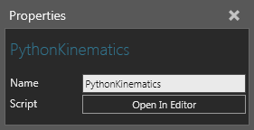
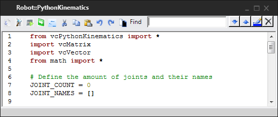

A Python Kinematics behavior allows you to define the forward and/or inverse kinematics of a Robot Controller for a robot using a script written in Python programming language.

| Name | Description |
| Name | Defines the name of the kinematics. |
| Script | Defines the script used for defining the properties of a kinematics object. |
In order to access the script editor:
The script editor is the same one used for a Python Script.

The initial content of the editor contains a code snippet used for defining the properties of a kinematics object that corresponds to a robot and its controller:
| from vcPythonKinematics import *
import vcMatrix import vcVector from math import * # Define the amount of joints and their names JOINT_COUNT = 0 JOINT_NAMES = [] # Init kinematic object information def OnInitKinObject( kinobj ): pass # Returns the amount of joints this kinematics handles def OnGetJointCount(): return 0 # Returns the indexed joint names def OnGetJointName(index): return JOINT_NAMES[index] # Constraints kinematic solutions to show only valid choices def OnConstrainParams(kinobj): return True # Relaxes kinematics solutions to show all choices def OnRelaxParams(kinobj): return True # Returns Kinematic chain target (matrix) value based on joint values def OnForward(kinobj): return True # Returns Kinematic chain joint values based on the target (matrix) def OnInverse(kinobj): return True |